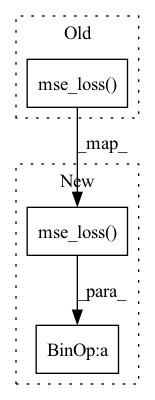

Pattern ID :3012
Before Change
z = z.detach().permute(0, 2, 3, 1)
k = l.shape[-1]
soft = l @ c
softQE = F.mse_loss( soft, z)
oneHot = F.one_hot(b, k).float()
hard = oneHot @ c
hardQE = F.mse_loss(hard, z)
loss += (softQE + hardQE + 0.1 * F.mse_loss(hard, soft)).mean()After Change
def forward(self, latents, zqs, softs):
loss = 0.0
for z, zq, soft in zip(latents, zqs, softs):
qe = F.mse_loss( z.detach(), zq, reduction="none") .mean(axis=(0, 2))
commit = F.mse_loss(z, zq.detach(), reduction="none").mean(axis=(0, 2))
softQE = F.mse_loss(z.detach(), soft, reduction="none").mean(axis=(0, 2))
softCommit = F.mse_loss(z, soft.detach(), reduction="none").mean(axis=(0, 2))
// joint = F.mse_loss(soft, zq, reduction="none").mean(axis=(0, 2))
loss += qe + 0.01 * commit + 0.1 * (softQE + 0.01 * softCommit)
return loss
class CompressionLoss(nn.Module):In pattern: SUPERPATTERN
Frequency: 4
Non-data size: 3
Instances Fragment ID: 16364473
Project Name: xiaosu-zhu/mcquic
Commit Name: 163d9bc5bb4d433d52358cf5c7abc5955136f574
Time: 2021-02-25
Author: xiaosu.zhu@outlook.com
File Name: src/mcqc/losses/structural.py
M Class Name: QError
N Class Name: QError
M Method Name: forward(4)
N Method Name: forward(5)
M Parent Class: nn.Module
N Parent Class: nn.Module
M File Name: src/mcqc/losses/structural.py
N File Name: src/mcqc/losses/structural.py
M Start Line: 11
M End Line: 21
N Start Line: 12
N End Line: 19
Before Change
quantize, embed_ind = self._codebook(x)
if self.training:
commit_loss = F.mse_loss( quantize.detach(), x) * self.commitment
quantize = x + (quantize - x).detach()
else:
commit_loss = torch.tensor([0.], device = x.device)After Change
if self.training:
if self.commitment > 0:
commit_loss = F.mse_loss( quantize.detach(), x)
loss = loss + commit_loss * self.commitment
if self.orthogonal_reg_weight > 0:
orthogonal_reg_loss = orthgonal_loss_fn(self.codebook)
loss = loss + orthogonal_reg_loss * self.orthogonal_reg_weight
quantize = self.project_out(quantize)
Fragment ID: 16364489
Project Name: lucidrains/vector-quantize-pytorch
Commit Name: be2e021bf30d70ec8d709c1ea3ce5ef796a00058
Time: 2021-12-02
Author: lucidrains@gmail.com
File Name: vector_quantize_pytorch/vector_quantize_pytorch.py
M Class Name: VectorQuantize
N Class Name: VectorQuantize
M Method Name: forward(2)
N Method Name: forward(2)
M Parent Class: nn.Module
N Parent Class: nn.Module
M File Name: vector_quantize_pytorch/vector_quantize_pytorch.py
N File Name: vector_quantize_pytorch/vector_quantize_pytorch.py
M Start Line: 293
M End Line: 308
N Start Line: 300
N End Line: 330
Before Change
mel = mel.masked_select(mel_mask.unsqueeze(-1))
mel_postnet = mel_postnet.masked_select(mel_mask.unsqueeze(-1))
mel_target = mel_target.masked_select(mel_mask.unsqueeze(-1))
mel_loss = self.mse_loss( mel, mel_target)
mel_postnet_loss = self.mse_loss(mel_postnet, mel_target)
d_loss = self.mae_loss(log_d_predicted, log_d_target)*0.01
except:After Change
mel = mel.masked_select(mel_mask.unsqueeze(-1))
mel_postnet = mel_postnet.masked_select(mel_mask.unsqueeze(-1))
mel_target = mel_target.masked_select(mel_mask.unsqueeze(-1))
mel_loss = self.mse_loss( mel, mel_target)* 0.1
mel_postnet_loss = self.mse_loss(mel_postnet, mel_target)
d_loss = self.mae_loss(log_d_predicted, log_d_target)*0.01 Fragment ID: 16364477
Project Name: ranchlai/mandarin-tts
Commit Name: ce86c1c517831ff15a037f9eff8308a85552ead4
Time: 2021-03-01
Author: ranchlai@hotmail.com
File Name: loss.py
M Class Name: FastSpeech2Loss
N Class Name: FastSpeech2Loss
M Method Name: forward(8)
N Method Name: forward(8)
M Parent Class: nn.Module
N Parent Class: nn.Module
M File Name: loss.py
N File Name: loss.py
M Start Line: 32
M End Line: 35
N Start Line: 32
N End Line: 35
Before Change
elif self.objective == "v":
target = alpha * noise - sigma * img
return F.mse_loss( pred, target)
// dataset classes
class Dataset(Dataset):After Change
elif self.objective == "v":
target = alpha * noise - sigma * img
loss = F.mse_loss( pred, target, reduction = "none")
loss = reduce(loss, "b ... -> b", "mean")
// min snr loss weight
snr = (alpha * alpha) / (sigma * sigma)
maybe_clipped_snr = snr.clone()
if self.min_snr_loss_weight:
maybe_clipped_snr.clamp_(min = self.min_snr_gamma)
if self.objective == "eps":
loss_weight = maybe_clipped_snr / snr
elif self.objective == "x0":
loss_weight = maybe_clipped_snr
elif self.objective == "v":
loss_weight = maybe_clipped_snr / (snr + 1)
return (loss * loss_weight).mean()
// dataset classes
Fragment ID: 16364478
Project Name: lucidrains/recurrent-interface-network-pytorch
Commit Name: 77e4ced5cd8d091acae31ad2cb19a32f64a4eb3a
Time: 2023-03-18
Author: lucidrains@gmail.com
File Name: rin_pytorch/rin_pytorch.py
M Class Name: GaussianDiffusion
N Class Name: GaussianDiffusion
M Method Name: forward(2)
N Method Name: forward(2)
M Parent Class: nn.Module
N Parent Class: nn.Module
M File Name: rin_pytorch/rin_pytorch.py
N File Name: rin_pytorch/rin_pytorch.py
M Start Line: 812
M End Line: 823
N Start Line: 819
N End Line: 850